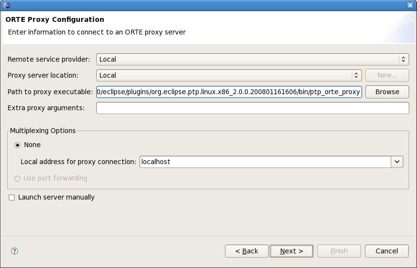

Topics include:
[needs updating] A Resource Manager controls resources for launching a parallel job. It could be a real job scheduling program, or the simplest is ORTE for a local? job.
In this example we will create a local resource manager for ORTE, in which the parallel program will be launched and run on the local machine.
To create a resource manager, first open the PTP Runtime Perspective.
(Window -> Open Perspective -> Other... and then choose "C/C++" from the list of perspectives.)
Right-click in Resource Managers view and select
Add Resource Manager...
Choose the ORTE Resource Manager Type
Select Next
The Resource Manager configuration dialog is shown:
To configure the simple case of a local ORTE Resource Manager, Select Local as the Remote service provider: 
The proxy server location should be set to Local as well,
and
[verify?] the Path to proxy server executable
should point to your ptp_orte_proxy executable file.
It should probably be pointing to your plugins directory under your eclipse installation...
[update image to show it in plugins directory]
Under Multiplexing options, None should be selected
and the local address for proxy connection should be set to your local address
(either IP address x.x.x.x or localhost.localdomain).
Select Next or Finish.
If you select Next, the Choose Resource Manager Name dialog
is shown and you have the opportunity to change the displayed name
for this resource manager, if desired.
Select Finish.
The new Resource Manager should appear in the list of Resource
Managers.
Right mouse on the resource manager and select Start Resource Manager.
The Resource Manager item in the Resource Managers view
changes color to indicate it is running.
Note that the resource manager cannot be edited when it is running.
Stop it first and then
it can be edited.